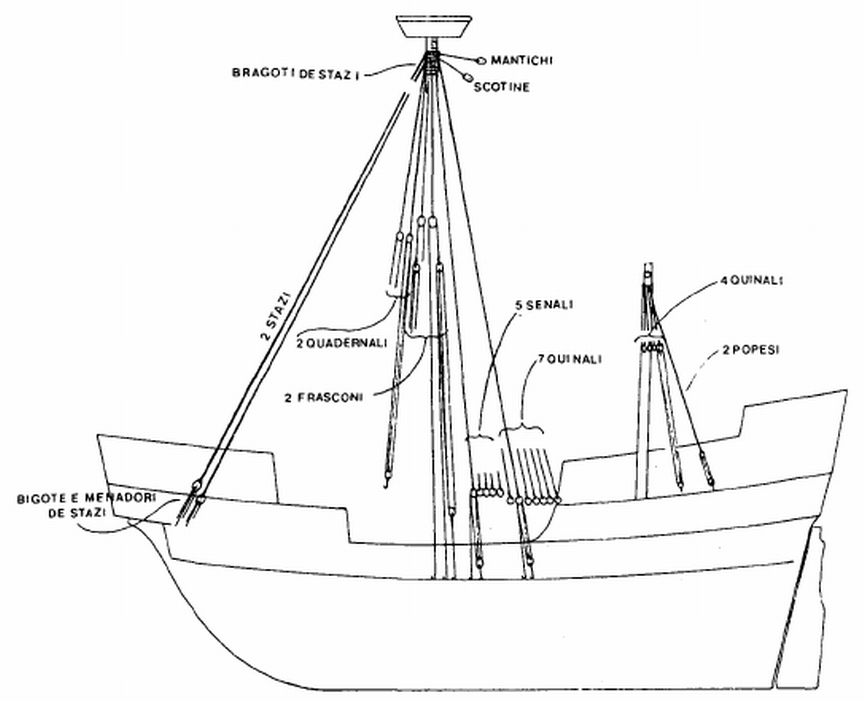
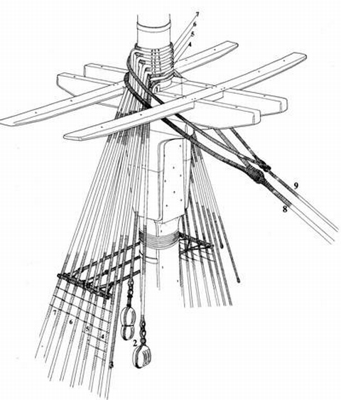
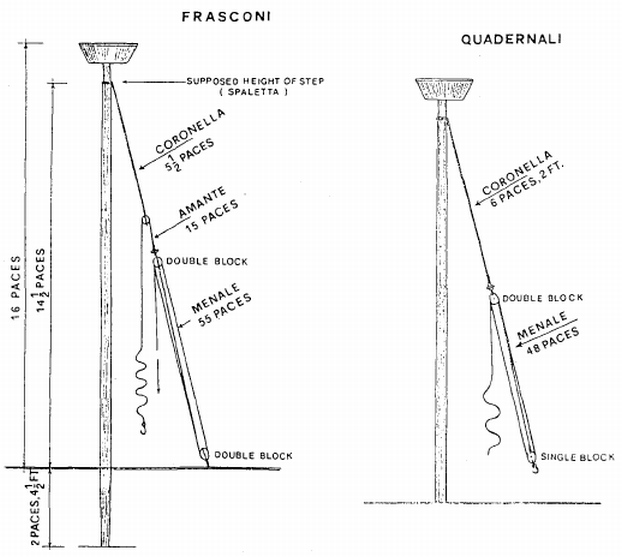
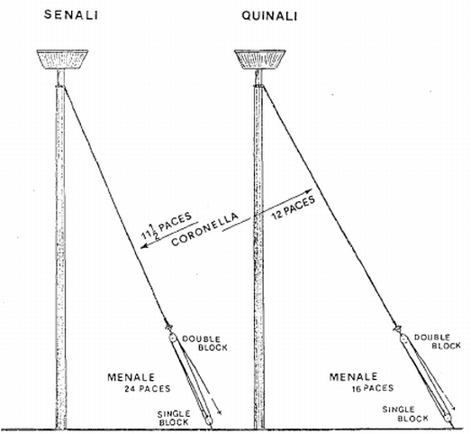

Венецианский ког: такелаж
Снастей живая теснота:
Канаты, мачты, стеньги, шкоты…
Максимилиан Волошин. Бегство
Начнем, как водится, со стоячего такелажа. В классическом варианте к нему относят снасти для удержания на месте рангоутных деревьев (в нашем случае – мачт, так как стеньги на венецианском коге еще не появились) – ванты, штаги во всем их разнообразии. Отметим, что нет прямого соответствия между тогдашним стоячим такелажем и его классическим аналогом. Так например, ванты не только удерживали мачты, но и использовались в качестве талей для поднятия тяжестей на борт судна, т.е. выполняют задачу, которую на классическом паруснике относят к функциям бегучего такелажа.

Стоячий такелаж венецианского кога. Рисунок из статьи Сержио Беллабарба (цит. выше)
Принципиально, для крепления мачт, несущих прямое парусное вооружение, используются, как мы уже отметили, два вида снастей: ванты, которыми рангоутные деревья крепятся по бортам, и штаги для удержания мачт в продольном направлении. И штаги, и ванты присутствуют в такелаже венецианского кога. Но имеют свои названия и особенности. Отметим их.
Штаги на венецианском языке той эпохи назывались stazi. R. C. Anderson, известный морской историк, в своей статье Italian Naval Architecture about 1445 (1925) , исследуя манускрипт Giorgio Timbotta из коллекции Британского Музея, приходит к выводу, что stazi, stasi – это не штаги, а топенанты (As far as I can judge the most probable meaning is "lifts.") - снасти бегучего такелажа, служащие для удержания в нужном положении ноков реев. Но это не так. И Бартоломео Кресченцио, и Огюстен Жаль в своих работах убедительно показывают, приводя примеры употребления, что stazi, stasi, stasci, statio – это штаги. В рукописи Fabrica di Galere указано, что stasi должны быть в два раза длиннее, чем высота мачты, измеренная от уровня палубы. В отличие от классических штагов (снасти 8 и 9 на рисунке ниже) их верхний конец не крепился непосредственно на топ мачты с помощью петли на конце снасти – огона, а заводился через посредство закрепленных на мачте шкентелей (снасти 2 на рисунке, шкентели для грота-гиней и грота-талей), bragoti. Длина этих шкентелей была от 3 до 5 passo, двойных шагов.

Набивали (обтягивали) шкоты традиционно, с помощью системы двух блоков, расположенных в нижней части снасти. Один из них назывался bigote de stazi, другой – menadori. Мы подробно рассматривали работу таких талей, когда изучали такелаж галер. Упоминается в тексте также такой элемент, как stazi in cadena, но явных указаний о его назначении в трактате не приводится. С.Беллабарба полагает, что под этим названием имеют в виду некое подобие вант-путенсов более поздней эпохи, т.е. металлическая оправка, которая одним концом охватывала нижний блок талей для набивки штага, а другим – наглухо крепилась к палубе судна.
Для определения поперечного размера троса для штага дается правило: вес троса должен был равняться половине фунта на каждый пассо высоты мачты. Для нашего кога высота мачты составляла 18 пассо , поэтому размер троса для штага – 9 фунтов на пассо, что соответствует, если вернуться к нашим расчетам в предыдущих постах, диаметру троса 6,3 см.
Имеется еще одно отличие в штагах для венецианского кога от их эквивалента на более поздних моделях. В период расцвета парусного флота на каждую мачту ставили один штаг и, иногда, страховали его второй снастью того же назначения – лось-штагом. На венецианском коге штагов было значительно больше. В Fabrica di Galere нет упоминаний о правиле, в соответствии с которым можно было бы вычислить необходимое количество штагов, однако приводятся конкретные данные о числе этих снастей для некоторых моделей кораблей. Так, для мачты длиной 24 пассо, одной из самых высоких среди рассматриваемых в трактате, требовалось 6 или 8 stazi.
Теперь перейдем к снастям стоячего такелажа, которые крепили мачту в поперечном направлении и которые в более поздние времена известны как ванты. Из текста следует, что было два типа этих снастей - frasconi и quadernali. В чем различались их функции – неясно. С.Беллабарба даже вообще сомневается, следует ли их относить к стоячему такелажу.

Рисунок из статьи Сержио Беллабарба (цит. выше)
Несколько слов о структуре этих снастей. Верхняя их часть носит название coronella. Диаметр их троса – 5 см. В словаре О.Жаля мы читаем, что этот термин означает шкентель и является производным от термина corona. Мы подробно описали смысл этого термина, когда говорили о такелаже галер, поэтому повторять не будем а ограничимся ссылкой на старый пост. Далее в структуру вант типа frasconi включается такой элемент, как amante. Это не что и иное, как мощные тали, или гини, с диаметром используемого троса 4,6 см, с помощью которых грузы поднимаются на борт судна, а также, в случае необходимости, обтягиваются паруса. Этим элементом ванты венецианского кога отличаются от своего аналога в более поздней истории. В состав вант входят, наконец, еще одни тали – menale , состоящие из двух двушкивных блоков, предназначенные для набивки вант. Их ходовой конец имел диаметр 2,6 см.
Помимо frasconi и quadernali к категории вант можно отнести еще две снасти - senali и quinali, которые не имели дополнительных гиней для грузоподъемных работ, а в остальном не отличались от первых, разве что диаметр их снастей был поменьше (шкентель у senali имел диаметр 4,1 см, у quinali – 3,9 см; ходовые концы у той и другой снасти были в диаметре по 2,5 см.)

Рисунок из статьи Сержио Беллабарба (цит. выше)
О бегучем такелаже венецианского кога поговорим в следующий раз.